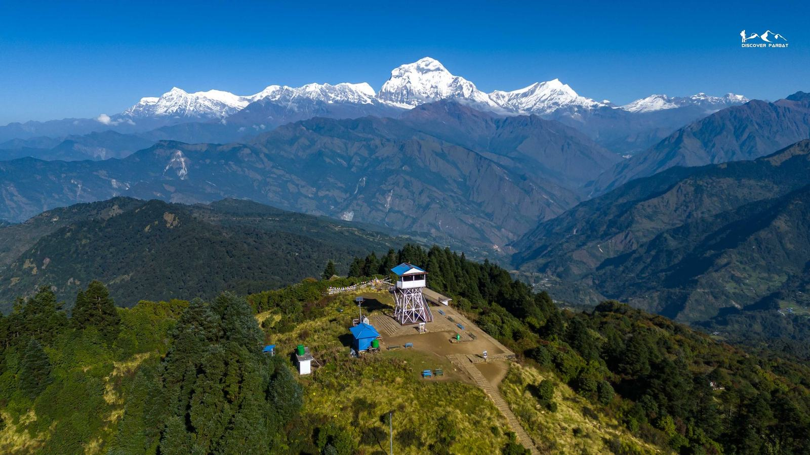

Poon Hill sunrise and a quiet Parbat finish, away from the crowds


The 4 Days Poon Hill Trek is a compact Himalayan journey built around one of Nepal's most loved sunrise viewpoints, with a quiet Parbat finish that most Poon Hill trekkers never see. Designed for travellers who want the classic Annapurna and Dhaulagiri panorama without giving up a week of their holiday, this route pairs the famous summit with hidden ridges, a traditional village homestay, and forest trails that stay peaceful long after the main circuit fills up.
The adventure begins with a morning drive from Pokhara to Banthati, a small settlement high on the Ghorepani trail. Starting from Banthati instead of the valley floor saves you the long, knee-testing climb of the stone steps below Ulleri, so your legs and your energy are kept fresh for the days that matter. From here the trail rises steadily through dense rhododendron and oak forest, with moss-covered trees, birdsong, and glimpses of the snow peaks opening between the branches. When the rhododendrons bloom from March to April, this section becomes one of the most colourful walks in the country.
By the end of the first day you reach Ghorepani, a lively trekking hub sitting at around 2,860 metres. Its teahouses fill with trekkers from around the world, and the mood in the evening is warm and social, with hot food, shared stories, and the Annapurna and Dhaulagiri ranges glowing in the late light above the village. It is a welcome place to rest before the big viewpoint of the trek.
Poon Hill, at 3,210 metres, is the most famous viewpoint of this journey and one of the great trekking rituals in Nepal. The summit opens up a sweeping 180-degree panorama of Dhaulagiri, Tukuche, Nilgiri, Annapurna I through South, Machhapuchhre, and Lamjung Himal. Most groups climb in the dark, jostling for space with dozens of headlamps. We do it differently. We head up after breakfast, when the crowds have already gone down, and enjoy the entire viewpoint almost to ourselves, with the mountains clear in the morning light and time to sit, look, and take photos without a queue.
What truly sets this itinerary apart from the standard Poon Hill route is where the trail leads next. Rather than looping back the way most trekkers do, the route descends to Phulbari and climbs into Parbat district towards Kokhe Danda, an emerging viewpoint that is drawing only the most curious of trekkers. At about 3,309 metres it is the highest point of Parbat district, and of this trek. The trail is noticeably quieter, winding through rhododendron forest and open ridgelines. At Kokhe Danda the sunrise arrives over Dhaulagiri and the Annapurna range, and on a clear day the view extends all the way to Langtang Lirung and even Numbur peak in the Lower Everest region. It feels like a place still finding its way onto the map, where the mountains feel closer and the experience feels entirely your own. If you would like more time on this ridge and in its Magar villages, our 5-day Kokhe Danda Trek is built entirely around it.
From Kokhe Danda, the descent continues through Jaljala to Lespar, a traditional village where the rhythms of rural Nepali life continue largely untouched by tourism. Stone pathways connect terraced farms, local women weave and work outside their homes, and the night is spent in a family homestay with home-cooked food and a momo-making session in the evening. This is the kind of authentic encounter that makes trekking in Nepal so meaningful. The mountains provide the spectacle, but the people provide the soul.
The final morning carries you through Haljure to Banau, and from there a taxi or jeep returns you to Pokhara with a stop at Kushma, a riverside town in Parbat district known for Nepal's highest suspension bridge over the Kali Gandaki gorge. In just four days you have moved from bustling mountain hub to secret ridge and quiet village, and from the familiar to the wonderfully unexpected. The 4 Days Poon Hill Trek is ideal for trekkers with limited time who still want a world-class Himalayan sunrise, real cultural immersion, and a sense of having found something a little off the usual path. Wondering how the two viewpoints compare? Read our Kokhe Danda vs Poon Hill comparison.
You want to stand on Poon Hill and see the Annapurna and Dhaulagiri ranges, without spending a week on the trail
You have 4 days and want a compact route covering forests, a famous viewpoint, a quiet ridge, and a traditional village
You enjoy combining a famous highlight like Poon Hill with quiet, off-the-beaten-path sections most trekkers never discover
You love authentic cultural encounters — eating local dal bhat and experiencing genuine rural Nepali hospitality in Lespar and Banau
You want a long, multi-week Himalayan trek — this route is short by design and built to fit into a tight schedule
You expect luxury teahouse facilities throughout — accommodation in the quieter sections like Kokhe Danda and Lespar is simple, clean, and wonderfully local
Morning drive from Pokhara to Banthati, where our hike begins. From Banthati, the trail climbs steadily through beautiful Rhododendron and Oak forest, passing small tea stops along the way where we take a break for lunch. The trail is gradual for most of the day, with a final uphill stretch into Ghorepani. We reach Ghorepani in the afternoon, with time to settle in, enjoy the village, and watch the mountains change colour in the evening light.
Today, unlike others, we don't start early in the morning for Poon Hill — we go after breakfast instead. It is an hour's uphill climb on stone steps, and by the time we reach Poon Hill it will be almost empty, so we have the entire viewpoint to ourselves. Later, we descend to Phulbari for lunch and then climb up to Kokhe Danda through a beautiful Rhododendron forest.
We wake up early for sunrise and the first sunrays over the Dhaulagiri and Annapurna range peaks. On a clear day, views extend all the way to Langtang Lirung and even Numbur peak in the Lower Everest region.
After breakfast, we start our hike to Lespar. Initially mostly flat or gradual downhill to Dhima Danda, then we descend to Jaljala and follow stone steps all the way down to Lespar. After lunch, we walk around to explore the village. In the evening, we can have a Momo making session with the host at the Homestay.
We enjoy a local breakfast in the morning. After that, we start our hike to Banau via Haljure. Initially an hour uphill, then mostly flat until Haljure, followed by another hour's descent to Banau. From Banau, we take a taxi or jeep back to Pokhara with a stop at Kushma — a total drive of about two and a half hours.
The 4-day Poon Hill Trek starts with a morning drive from Pokhara via Nayapul and Hile to Banthati, where you walk up through rhododendron and oak forest to Ghorepani (2,860 m). After breakfast you climb to Poon Hill (3,210 m) when it is almost empty, then walk via Phulbari to Kokhe Danda (3,309 m), the highest point of Parbat, for sunrise over Dhaulagiri and Annapurna. From Kokhe Danda the trail runs via Dhima Danda and Jaljala down to the Magar village of Lespar for a homestay night, and on via Haljure to Banau for the drive back to Pokhara via Kushma. Tap a day on the map to trace its stage.
Route lines join the stops in order and show the general line of the trail, not an exact GPS track. Map data © OpenStreetMap contributors.
Yes — this is one of the most beginner-friendly treks in the Annapurna region. The highest point is Kokhe Danda at about 3,309 metres, just above Poon Hill (3,210 metres), and the trail is clear with regular tea stops. Day 3 is the longest walk, with a steady descent to Lespar, but the pace is relaxed. If you can walk comfortably for 5–6 hours over consecutive days, you'll handle this route well.
The standard Poon Hill circuit starts from Nayapul, climbs the long stone steps of Ulleri, and loops back through Tadapani and Ghandruk. This route starts higher at Banthati, so you skip the hardest climb, and after Poon Hill it continues into Parbat district through Kokhe Danda and Lespar, areas that most trekkers never see. You get Poon Hill, plus a hidden viewpoint, plus a genuine cultural finale, all in four days.
Starting from Banthati means we drive higher up the mountain and avoid the long, steep climb below Ulleri. It saves a lot of time and energy, lets us reach Ghorepani comfortably on the first afternoon, and keeps our legs fresh for Poon Hill and the quieter ridges that follow. It is what makes a full Poon Hill experience possible in just four days.
Most trekkers leave Ghorepani in the dark and arrive at the summit together, so the viewpoint is crowded at sunrise. By going up after breakfast, we reach Poon Hill when it is almost empty. The mountains are still clear in the morning light, and we can enjoy the panorama and take photos in peace. You still get a proper sunrise on Day 3 at Kokhe Danda.
We arrange private transport from Pokhara to Banthati at the start. On the final day, after the hike down to Banau, we take a taxi or jeep back to Pokhara via Kushma, which is about two and a half hours. Both transfers are included in the trek cost. There are no public buses or connections to arrange on your end.
Most nights are comfortable teahouses with private rooms and shared bathrooms. In Ghorepani we stay in a community lodge. Kokhe Danda accommodation is basic and genuinely off-grid, which is part of the appeal. The final night at Lespar is a family homestay — warm, personal, and home-cooked. Hot showers are available at lower stops for a small fee. A sleeping bag liner is recommended for the higher nights.
October and November offer the clearest skies and the best mountain views — ideal for Poon Hill and the sunrise at Kokhe Danda. March to May is equally rewarding, with rhododendrons in full bloom through the forest sections between Banthati and Ghorepani. December is quiet and crisp, with very few trekkers on the trail. June to September brings monsoon conditions and is not recommended for this route.
You need only the Annapurna Conservation Area Permit (ACAP), because Banthati, Ghorepani and Poon Hill lie inside the Annapurna Conservation Area. A TIMS card is not required. The ACAP is included in your trek cost and arranged by us in Pokhara before departure, so you don't need to visit any permit offices yourself.
Teahouse menus offer the standard Himalayan range — dal bhat, noodles, pasta, eggs, soups, and seasonal vegetables. At the Lespar homestay on Day 3, meals are home-cooked by your host family, and the evening includes a momo-making session. Three meals per day are included throughout the trek. If you have dietary requirements, let us know in advance and we will inform each stop along the route.
Key items: sturdy trekking boots, warm layers including a down or fleece jacket (nights at Ghorepani and Kokhe Danda can drop near freezing), a waterproof outer shell, trekking poles for the descent days, a headlamp, a reusable water bottle, sunscreen, and a daypack of 20–25L. A sleeping bag liner is recommended for the homestay and off-grid teahouse nights. We'll send a full packing list after booking.
Yes. The 6-day Muldai Viewpoint Trek starts from Ghandruk and adds Tadapani and the Muldai sunrise viewpoint before joining this route at Ghorepani. If you prefer to skip the busy Poon Hill trail completely, the 5-day Kokhe Danda Trek focuses on the Parbat ridge and Magar homestays in Haljure and Lespar.
If you need to return early for any reason, there is no refund on the remaining trek cost. However, we will arrange comfortable accommodation for you in Pokhara for the number of nights that remain on your itinerary — at no extra charge. Please see our full Cancellation Policy for complete details.